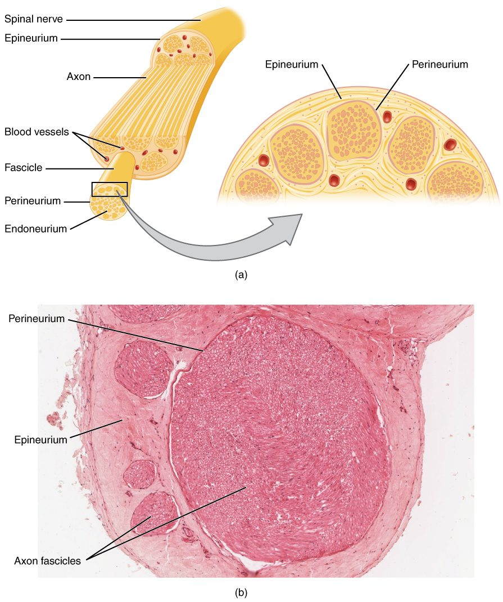

Los cables del cuerpo
El sistema nervioso periférico es todo el tejido nervioso que queda fuera del cerebro y la médula espinal: los nervios y los ganglios. Conecta el sistema nervioso central con la piel, los músculos y los órganos. A diferencia del central, que tiene muy poca capacidad de reparación, los nervios periféricos pueden regenerarse, aunque despacio (alrededor de 1 milímetro al día, unos 3 centímetros al mes).


Cómo está hecho un nervio
Un nervio es como un cable eléctrico con muchos hilos. Cada «hilo» es el axón de una neurona, la mayoría rodeados de mielina fabricada por las células de Schwann. Los axones se agrupan en haces (fascículos), envueltos por capas de tejido conjuntivo que los protegen. El nervio más largo y grueso del cuerpo es el ciático, del grosor de un dedo en su origen.
Por su función, las fibras son:
| Tipo de fibra | Qué transmite | Características |
|---|---|---|
| Motoras | Órdenes a los músculos | Gruesas, con mielina |
| Sensitivas gruesas | Tacto, vibración, posición | Gruesas, rápidas |
| Sensitivas finas | Dolor y temperatura | Finas, poca o ninguna mielina, lentas |
| Autonómicas | Sudor, tensión, vísceras | Finas |
Divisiones
- Somático: controla los músculos voluntarios y recoge la sensibilidad de la piel. Incluye los 31 pares de nervios raquídeos que salen de la médula espinal, que se agrupan en plexos (cervical, braquial, lumbar, sacro) antes de formar los nervios de los brazos y las piernas, y los nervios craneales.
- Autónomo: controla las funciones involuntarias.
La unión neuromuscular
Donde el nervio motor se une al músculo hay una sinapsis especial, la placa motora, que usa acetilcolina como neurotransmisor. Es la diana de la miastenia gravis (anticuerpos contra el receptor), de la toxina botulínica y de los relajantes musculares de la anestesia.
Enfermedades de los nervios
| Patrón | Ejemplos |
|---|---|
| Polineuropatía: muchos nervios, empieza en los pies («guante y calcetín») | Neuropatía periférica por diabetes (la causa más frecuente), alcohol, déficit de B12, quimioterapia, hereditaria (Charcot-Marie-Tooth) |
| Mononeuropatía: un solo nervio | Túnel carpiano (mediano), nervio cubital en el codo, peroneo en la rodilla (pie caído) |
| Radiculopatía: una raíz | Ciática por hernia discal |
| Polirradiculoneuropatía aguda | Guillain-Barré: debilidad que sube en días |
| Neuropatía de fibra fina | Dolor quemante con exploración casi normal |
Los síntomas típicos son hormigueos, adormecimiento, dolor quemante o como descargas, debilidad y pérdida de reflejos. El dolor por lesión de los nervios es el dolor neuropático.
Cómo se estudian
La prueba principal es el electromiograma y la conducción nerviosa, que diferencia si se daña el axón o la mielina. Se completa con análisis, a veces con pruebas genéticas, ecografía del nervio, biopsia de piel (fibras finas) o biopsia de nervio.
Fuentes
- Preston DC, Shapiro BE. Electromyography and Neuromuscular Disorders. 4.ª ed. Elsevier; 2020.
- Hanewinckel R, et al. The epidemiology and risk factors of chronic polyneuropathy. Eur J Epidemiol. 2016;31:5-20.
- Menorca RMG, et al. Nerve physiology: mechanisms of injury and recovery. Hand Clin. 2013;29:317-30.